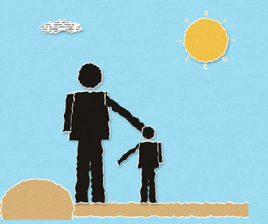
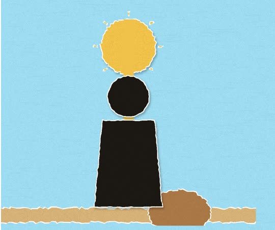
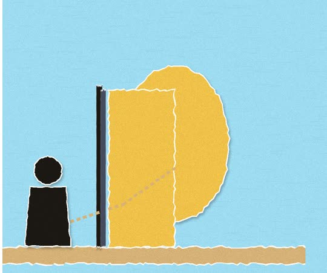

시애틀 시온장로교회는 시애틀에 있는 한인교회입니다.
주일 설교 ·
유전자, 환경, 은혜
타고난 유전자와 상처투성이 환경이 내 인생의 결말을 완전히 정해버리는가, 아니면 그것을 뛰어넘을 길이 있는가?
질문으로 만나는 설교
요즘 이런 적 있나요?
2개 이상이면, 끝까지 보세요
0 / 4

이걸 '자기 효능감'이래요
할 수 있다는 마음이 행동을 만든다는 거예요

된다고 외치며 걸어간 사람은 달라졌어요
말과 태도가 결과까지 바꿔요

이 마음, 어떻게 가질 수 있을까
나머지는 설교에서
이 질문의 답은 설교에 있어요.
질문으로 만나는 설교
스트레스 받을 때 나는?
하나를 골라 보세요
고른 답이 어릴 적 관계 습관과 이어질 수 있어요

심리학에선 이걸 '애착 이론'이라고 불러요
어릴 때 관계 방식이 어른이 되어도 남는대요

버림받아도 완전히 새로 준비될 수 있어요
묵묵히 쌓아온 시간이 결정적 순간에 빛났어요

그는 어떻게 버림받은 과거를 이겼을까
답의 나머지는 이 설교에
이 질문의 답은 설교에 있어요.
- 설교
- 유전자, 환경, 은혜
- 본문
- 사사기 11:1-11
- 날짜
- 2026년 9월 27일 주일예배
- 설교자
- 이영래 목사 · 시애틀 시온장로교회
- 주제
- 인생반전 · 흙수저 · 자존감 · 자기효능감 · 동기부여 · 자기계발 · 마인드셋 · 애착유형
이번 주일, 함께 예배해요.주일예배 오전 10:45 · 본당 · 17920 Meridian Ave N, Shoreline, WA 98133
예배 안내